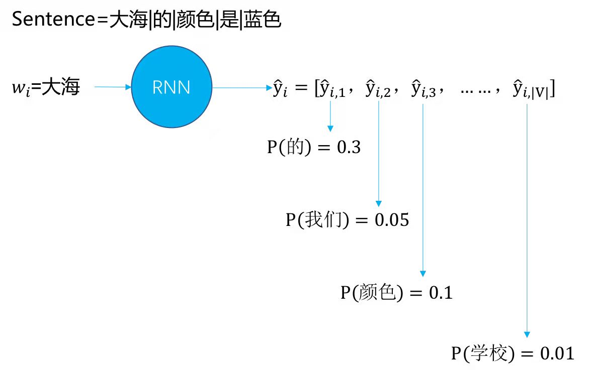
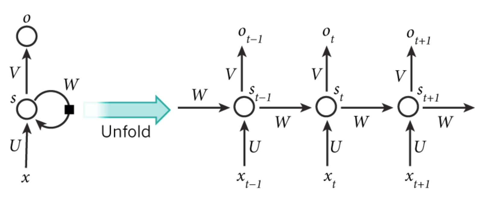
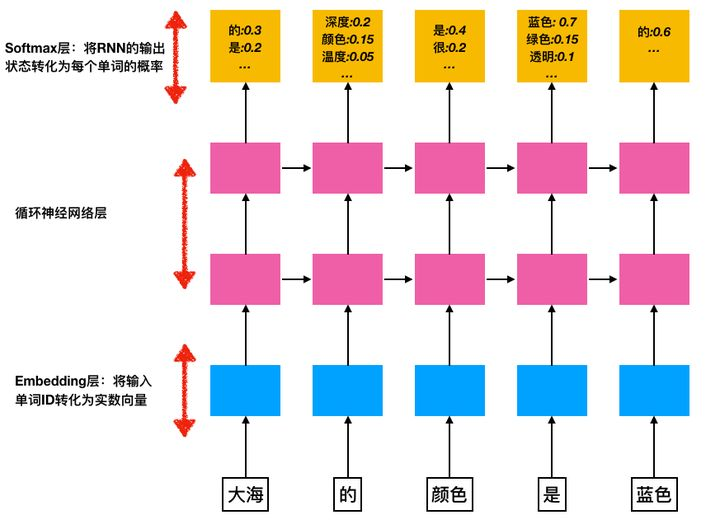

一、语言模型篇¶
1. Tf-idf模型¶
- 如果一个词条w在某个文档出现次数很多，而在其他文档中出现的次数很少，那么这个词w对分类任务有一定的区分度，有价值的信息含量高，可以优先作为分类任务的特征，即\mathbf{tf_w.idf}值较大那些单词，其计算公式如下：
\mathbf{tf_w.idf} = \mathbf{tf_w} \times \mathbf{idf}
tf_w=\frac{在某类中词条w出现的次数}{所有词条的数目}
idf=\log \frac{语料库所有的文档数目}{包含词条w的文档数目}
2. 神经网络语言模型（NNLM）¶
2.1 问题定义：¶
- 在计算一个句子的概率时，我们将一个句子看作一个单词序列：S=(w_1，w_2，w_3，......，w_{m-1}，w_m)，其中m为句子长度，那么其概率可以表示为：p(S)=p(w_1，w_2，w_3，......，w_{m-1}，w_m)，根据链式法则(Chain Rule)：p(S)=p(w_1，w_2，w_3，......，w_{m-1}，w_m)=p(w_1)p(w_2|w_1)p(w_3|w_1，w_2)......p(w_{m-1}|w_1，w_2，w_3，......w_{m-2})p(w_m|w_1，w_2，w_3，......，w_{m-1})；
2.2 示例：¶
- 例如：“大海|的|颜色|是|蓝色“这句话的概率是p(大海的颜色是蓝色)=p(大海)p(的|大海)p(颜色|大海的)p(是|大海的颜色)p(蓝色|大海的颜色是)，如下图所示：
2.3 语言模型的中心思想和核心问题¶
- 当预测当前词的时候，使用当前词前面所有的词充当上下文信息。公式定义为：p(w_n|w_0，w_1，\cdots\cdots， w_{m-1})，上述为求解当前词的条件概率，根据链式法则进行拆解，p(S)=p(w_1，w_2，w_3，\cdots\cdots，w_{m-1}，w_m)=p(w_1)p(w_2|w_1)p(w_3|w_1，w_2)......p(w_{m-1}|w_1，w_2，w_3，......w_{m-2})p(w_m|w_1，w_2，w_3，......，w_{m-1}) 我们常听说的n-gram语言模型，是对上述条件概率加上了马尔科夫假设，以3-gram举例，如下所示：p(w_n|w_0，w_1，\cdots， w_{n-1}) \approx p(w_n|w_{n-2}，w_{n-1})至于为什么要进行马尔科夫假设，其实是因为基于极大似然估计，p(w_n|w_0，w_1，\cdots， w_{n-1})难以求解。其实不难发现，公式p(w_n|w_0，w_1，\cdots， w_{n-1})其实是一个时序结构，恰好符合RNN或者LSTM的框架，所以顺理成章，就有了基于 RNN，LSTM的语言模型。
2.4 语言模型的评估指标¶
- 语言模型的效果好坏的常用评价指标是困惑度(perplexity，PPL)，在一个测试集上得到的perplexity(PPL)越低，说明建模的效果越好，计算perplexity(PPL)的公式如下：perplexity(S)=p(w_1，w_2，w_3，\cdots\cdots，w_{m-1}，w_m)^{-1/m}=\sqrt[m]{\prod _{i=1}^{m}\frac {1}{ p(w_i|w_1，w_2，\cdots\cdots，w_{i-1})}}
- 在语言模型的训练中，考虑计算计算会存在大数相乘或者小数相乘溢出问题，通常采用perplexity(PPL)的对数表达形式：log(perplexity(S)) = - \frac{1}{m}\sum_{i=1}^{m}{p(w_i|w_1，w_2，\cdots\cdots，w_{i-1})}
3. 循环神经网络语言模型¶
3.1 RNN（循环神经网络）网络结构¶
-
RNN示意图： 
-
S_t = f(U*x_{t-1}+W*S_{t-1})
-
O_t = g(V*S_t)
-
f和g均为激活函数， 其中f可以是tanh，relu，sigmoid等激活函数，g通常是softmax也可以是其他函数；
-
在t=1时刻，一般S_0=0，随机初始化W，U，V，进行下面的公式计算：
- h_1=U*X_1+W*S_0
- S_1=f(h_1)
- O_1=g(V*S_1)
-
在t=2时刻，此时的状态s_1作为时刻t=1的记忆状态将参与下一个时刻的预测活动，进行下面的公式计算：
- h_2=U*X_2+W*S_1
- S_2=f(h_2)
- O_2=g(V*S_2)
-
以此类推， 可以得到最终的输出值为：
- h_t=U*X_t+W*S_{t-1}
- S_t=f(h_t)
- O_t=g(V*S_t)
-
注意：
- 这里的W，U，V在每个时刻都是相同的(权重共享)。
- 隐藏状态S可以理解为：S=f(现有的输入+过去记忆总结) 。
3.2 基于循环神经网络的语言模型¶
-
RNN语言模型示意图： 
-
输入层：Embedding层，将输入单词表示为实数向量w_i；
-
隐藏层：循环神经网络层，采用隐藏层是深度为2层的深度网络；
-
输出层：Softmax层，针对输入w_i输出为\hat{y}_i为一个向量[\hat{y}_{i，1}，\hat{y}_{i，2}，\hat{y}_{i，3}，......，\hat{y}_{i，|V|-1}，\hat{y}_{i，|V|}]，其中：
- V=\{ v_1，v_2，v_3，......，v_{|V|-1}，v_{|V|}\}，表示语料库中所有单词组成的单词列表，|V|是词汇表中单词的数量；
- y_{i，j}=p(v_{j}|w_1，w_2，w_3，......，w_{i}) 表示在(w_1，w_2，w_3，......，w_{i})的情况下，第i+1个单词是单词表中第j个单词v_j的概率。
3.3 常用的几个特别符号¶
- UNK（unknown word）：表示超过了词汇表的未知单词；
- EOS（end of sentence）：表示句子的结束符号；
- PAD（padding）：表示填充符号，对齐长度使用；
- GO（go）：表示句子开始的地方，一般是decoder或encoder的开始符号；